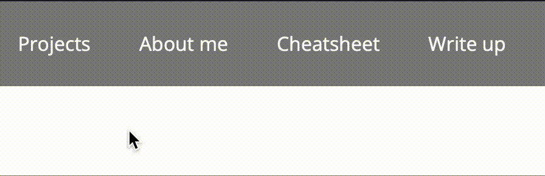

My initial thought is to make a pretty simple and clean website without too many complicated interactions. Therefore, I made all of my transitions between pages into a single navigation bar that will always appear on the top of the website. After built up the navigation bar, I checked the navigation link between pages, and then started thinking the brief structure of each page. For instance, the write up page has an architecture (besides navigation bar) from the container, to mp0 (assignment number), and details of the write up content. After settling down the structure and content, I started thinking about styles for my website. I put reusable css into the index.css and share the style sheet over pages so that I don't have to write duplicated styles. Also, I tried different google font families to get some insights. The screenshot is the website that I just finished the navigation bar.
One problem that I faced is how I can insert the code snippet into my cheatsheet. I had a hard time thinking how I can style my text just like writing code in the VS Code. After some random web searching, I found that a combination of pre tag and code tag in HTML can perfectly solve the problem (as for now). Therefore, I used this technique in my cheatsheet page.
I tried one type of transition on the navigation bar that letting the underline appears while cursor hovering on the navigation bar text. The default of a tag is to change the color once the page link is visited. Therefore, I changed the styling there for keeping the same color after visited to make the color consistent.
The cheatsheet contains the code for making the transition work. I utilized hover, visited, and link transition to keep the a tag color consistent and show the underline (text-decoration attribute) while hovering.
